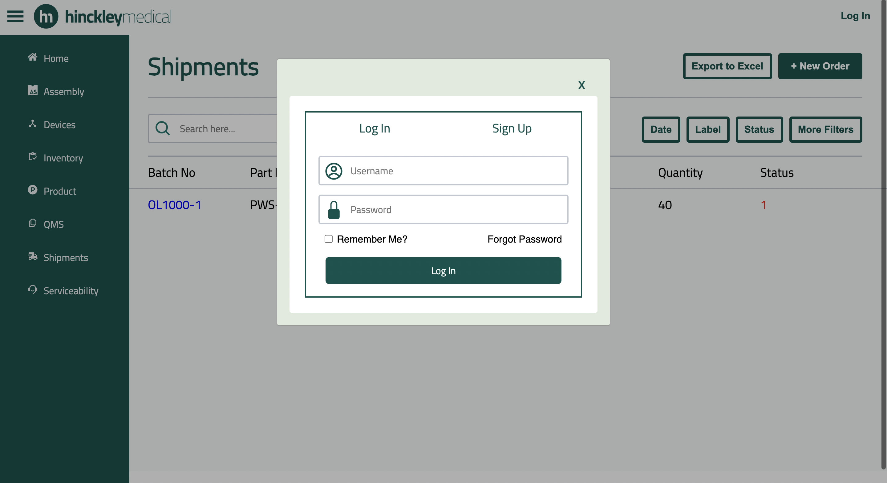

Internal Infrastructure Web Application

Project Overview:
Hinkley Medical is a small startup that has a fully functional product, and has recently begun to market it to consumers. Currently, all shipment, inventory, and warranty tracking is done manually through Microsoft Excel. This is highly inefficient, and does not facilitate the consumer being able to view or manage their own products for information. This project specifically targets Hinkley Medical employees in order to make their lives easier and to provide ready access to consumers regarding product information.
Contibution:
Currently I am working as one of our Frontend Developer and am currently creating designs and implementing functionality that can help the users acess the website with ease.
Learned Skills:
Learning Javascript with React along with HTML & CSS development tools.
Resources Used:
Website is runnning on javascript with AWS Amplify. NPM Framework and JS and CSS.